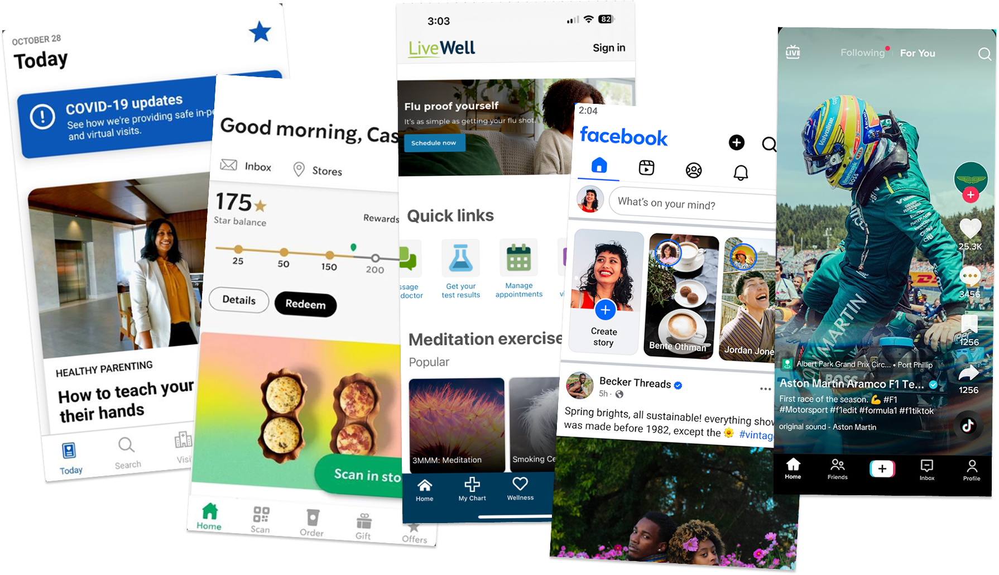

MyNM App Redesign

Project Details
Objective
Hundreds of thousands of Northwestern Medicine patients manage their healthcare through the MyNM app. However, the mobile experience was hard to navigate and lacked key features available on the web experience. As the UX designer and researcher, I led the redesign effort to modernize the app, improve usability, and ensure feature parity with MyNM’s core capabilities.
Research
Combining data from the in-app feedback form with results from a survey of app users, I found that users’ biggest pain point was locating important information in a timely manner. Much of this stemmed from confusion over the MyNM app’s custom layout and a desire for something closer to the stock MyChart layout that the web version of MyNM uses.

To ensure consistency, I performed a content audit of the app and web version to identify every feature that was missing. In an effort to improve on the web experience, I looked for overall trends in mobile app navigation by doing a competitive analysis of 10 of the top apps across the iOS App Store and Google Play as well as 12 direct competitors.
New Design
Following the MyNM web layout, I replaced the Home Screen icons with the Health Feed and brought shortcuts to the navigation. Instead of using the hamburger menu, though, I opted to follow industry trends and use a bottom tab bar as the persistent navigation, with “My Tools” representing the searchable menu of all activities.

Final Thoughts
The redesigned app was praised by both users and stakeholders. Users found it much easier to use. Many liked that it now felt more like the MyNM web version, which made it less confusing. I intend to monitor user interactions and make iterative improvements as needed.